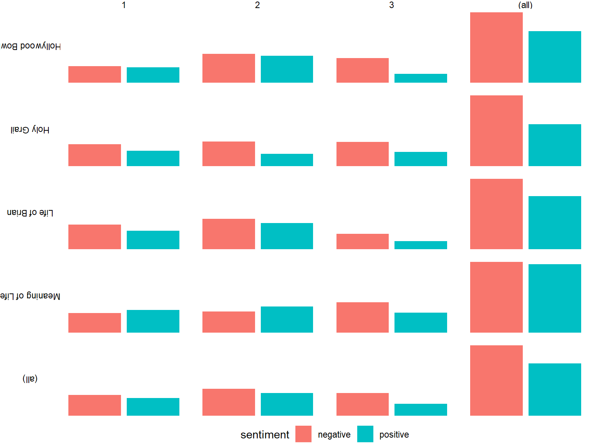
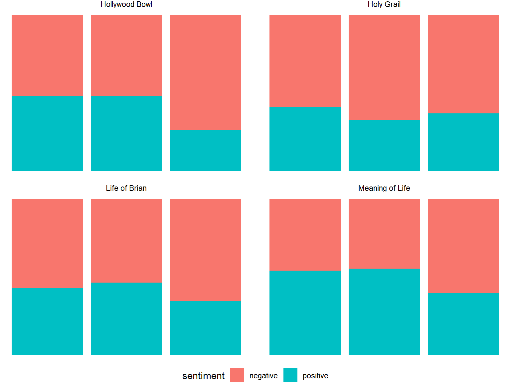
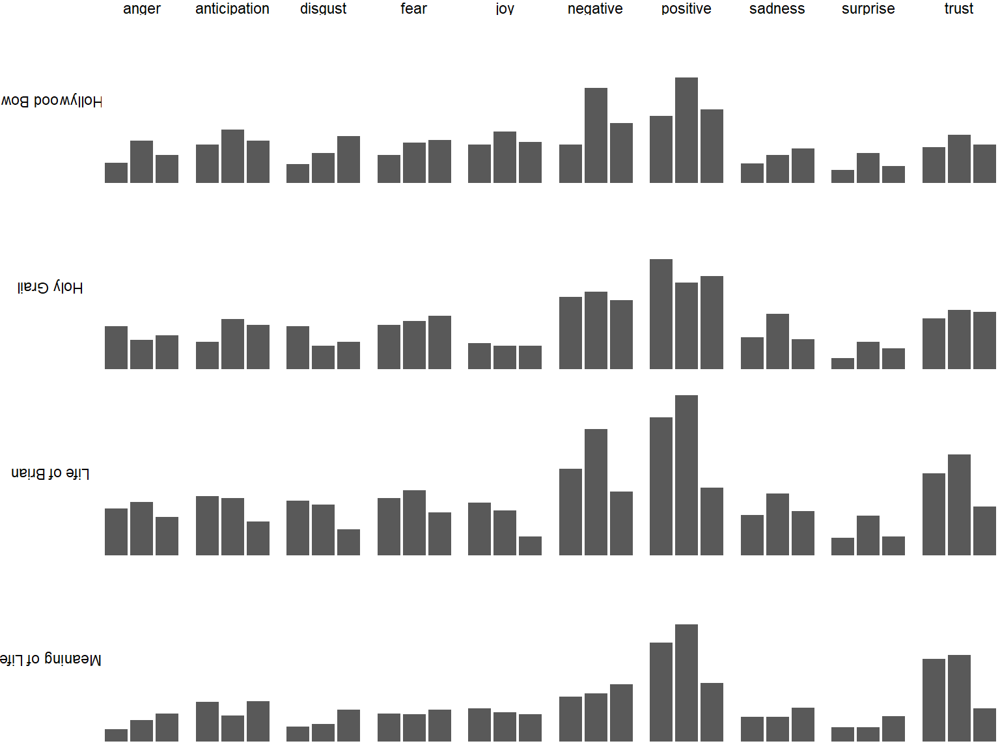
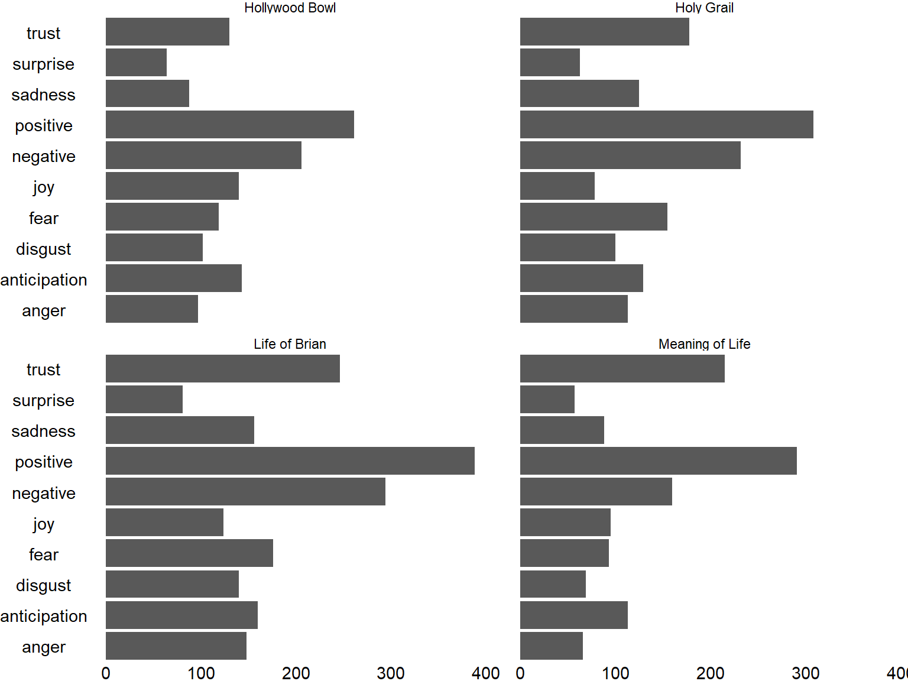
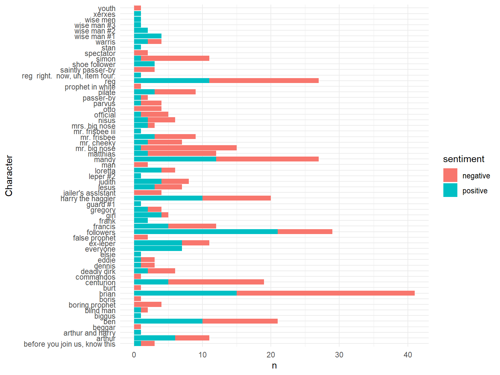
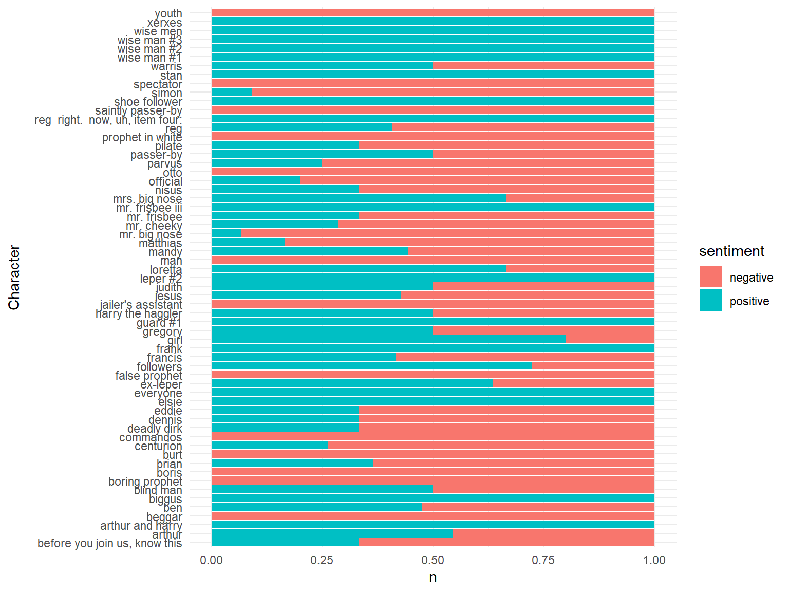
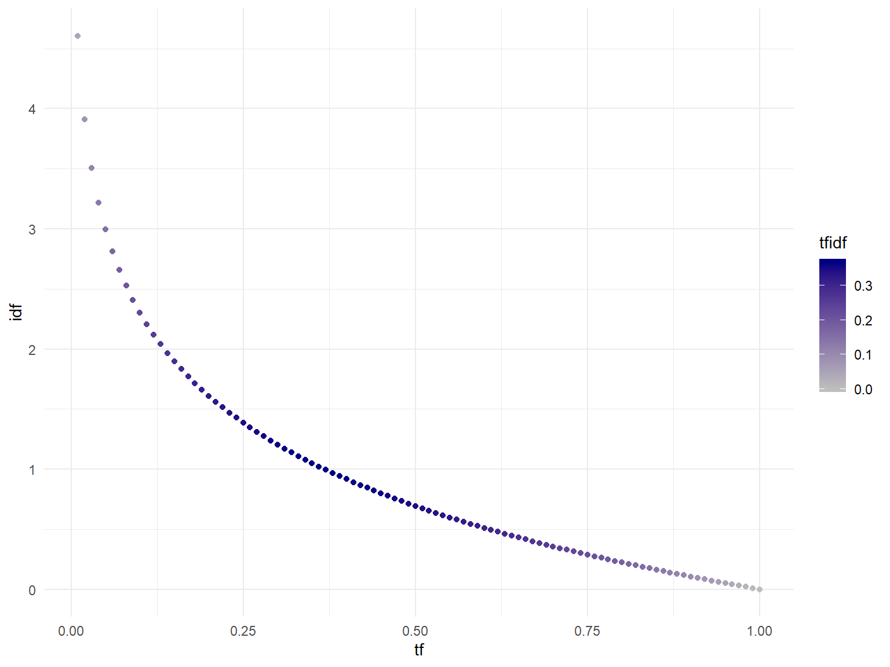
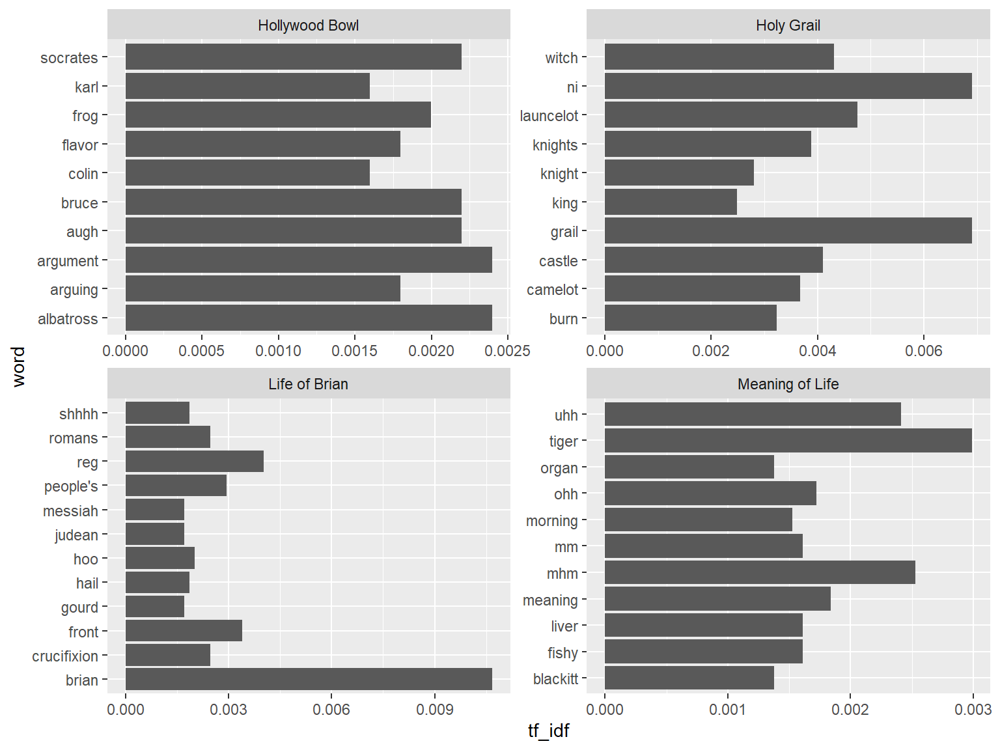

Hands up if you …
table and a data.frame in RdplyrTextAnalysis packagervest to scrape web sitesdplyr for manipulationtidytext for text tokenisation & moretidytextggplot2Use someone else’s hardwork e.g. Microsoft Cognitive Services
microsoft.com/cognitive-services
[The service] returns a score between 0 and 1 denoting overall sentiment in the input text. Scores close to 1 indicate positive sentiment, while scores close to 0 indicate negative sentiment.
Sentiment score is generated using classification techniques. The input features to the classifier include n-grams, features generated from part-of-speech tags, and embedded words. The classifier was trained in part using Sentiment140 data. Docs
I don’t want to talk to you no more, you empty headed animal food trough wiper. I fart in your general direction. Your mother was a hamster and your father smelt of elderberries.
library(TextAnalysis)
text<-"I don't want to talk to you no more, you empty headed animal food trough wiper. I fart in your general direction. Your mother was a hamster and your father smelt of elderberries."
someText<-data.frame(id=1, text)
result<-getSentiment(someText)| id | text | language | score |
|---|---|---|---|
| 1 | I don’t want to talk to you no more, you empty headed animal food trough wiper. I fart in your general direction. Your mother was a hamster and your father smelt of elderberries. | en | 0.0856501 |
Well…
text=c("I'm filled with happiness and joy",
"I'm so sad right now and I want to cry")
someMoreText<-data.frame(id=1:2, text)
result<-getSentiment(someMoreText)| id | text | language | score |
|---|---|---|---|
| 1 | I’m filled with happiness and joy | en | 0.8464015 |
| 2 | I’m so sad right now and I want to cry | en | 0.0007791 |
Well…
Use the API to get sentiment scores for 5 random lines from the Meaning of Life
scriptSpeechgetSentiment()scriptSpeech %>%
filter(Script=="Meaning of Life") %>%
sample_n(5) %>%
select(id=lineid, text=lines) %>%
getSentiment()| id | text | language | score |
|---|---|---|---|
| 4087 | be quiet! englishmen, you’re all so fucking pompous, and none of you have got any balls. | en | 0.1321568 |
| 2822 | yes! | en | 0.8335907 |
| 5354 | hallo. now, don’t you worry. | en | 0.8141621 |
| 5083 | oh, we’re just fine! | en | 0.9740794 |
| 3780 | excuse me, sir. | en | 0.2281185 |
| word | sentiment |
|---|---|
| happy | positive |
| unhappy | negative |
| word | value |
|---|---|
| happy | 3 |
| unhappy | -2 |
| word | sentiment |
|---|---|
| happy | anticipation |
| happy | joy |
| happy | positive |
| happy | trust |
| unhappy | anger |
| unhappy | disgust |
| unhappy | negative |
| unhappy | sadness |
| lexicon | n |
|---|---|
| afinn | 2477 |
| bing | 6783 |
| loughran | 3917 |
| nrc | 6468 |
data.frame(word=c("holy","bother", "crucified", "spanking","happy")) %>%
left_join(get_sentiments("bing")) ->
bingsentiment| word | sentiment |
|---|---|
| holy | positive |
| bother | negative |
| crucified | NA |
| spanking | NA |
| happy | positive |
| sentiment | n |
|---|---|
| positive | 2 |
scriptWordsscriptWords %>%
filter(Script=="Meaning of Life") %>%
left_join(get_sentiments("bing")) %>%
count(sentiment)## Joining, by = "word"| sentiment | n |
|---|---|
| negative | 128 |
| positive | 124 |
| NA | 1760 |
%>%left_join, count, slice, sample_n, filter, selectsentiments tableIf you’re not sure which sentiment lexicon you want to use, you can use them all and filter later.
## Joining, by = "word"| Script | Part | Character | word | sentiment | lexicon | value |
|---|---|---|---|---|---|---|
| Holy Grail | 1 | dennis | special | joy | nrc | NA |
| Meaning of Life | 2 | atkinson | honest | disgust | nrc | NA |
| Holy Grail | 2 | zoot | art | joy | nrc | NA |
| Holy Grail | 2 | father | leave | sadness | nrc | NA |
| Holy Grail | 1 | mortician | shit | negative | nrc | NA |
| Script | Part | sentiment | n |
|---|---|---|---|
| Hollywood Bowl | 1 | negative | 42 |
| Hollywood Bowl | 1 | positive | 39 |
| Hollywood Bowl | 2 | negative | 73 |
| Hollywood Bowl | 2 | positive | 68 |
| Hollywood Bowl | 3 | negative | 62 |
| Hollywood Bowl | 3 | positive | 22 |
ggplot(bingScoreSummary, aes(x=sentiment, y=n, fill=sentiment)) +
geom_col()+
facet_grid(Script ~ Part,margins = TRUE, scales = "free",switch = "y")+
theme_void()+theme(legend.position="bottom")
ggplot(bingScoreSummary, aes(x=Part, y=n, fill=sentiment)) +
geom_bar(stat="identity",position = "fill") +
facet_wrap(~Script)+
theme_void()+theme(legend.position="bottom")
| Script | Part | sentiment | n |
|---|---|---|---|
| Hollywood Bowl | 1 | anger | 22 |
| Hollywood Bowl | 1 | anticipation | 41 |
| Hollywood Bowl | 1 | disgust | 20 |
| Hollywood Bowl | 1 | fear | 30 |
| Hollywood Bowl | 1 | joy | 41 |
| Hollywood Bowl | 1 | negative | 41 |
ggplot(nrcScoreSummary, aes(x=Part, y=n))+
geom_col()+
facet_grid(Script~sentiment,switch = "y")+
theme_void()
ggplot(nrcScoreSummary, aes(x=sentiment,y=n))+
geom_col()+
coord_flip()+
facet_wrap(~Script)+
theme_void()+
theme(axis.text = element_text(angle = 0))
scoredWords to words with bing sentiment scoresmutatetop_nscoredWords %>%
filter(lexicon=="bing") %>%
filter(Script=="Life of Brian") %>%
count(Character,sentiment) %>%
mutate(TotalWords=sum(n)) %>%
ungroup() %>%
top_n(20,TotalWords) ->
lifeofbriansentiment| Character | sentiment | n | TotalWords |
|---|---|---|---|
| before you join us, know this | negative | 2 | 408 |
| before you join us, know this | positive | 1 | 408 |
| arthur | negative | 5 | 408 |
| arthur | positive | 6 | 408 |
| arthur and harry | positive | 1 | 408 |
| beggar | negative | 1 | 408 |
ggplot(lifeofbriansentiment, aes(x=Character,y=n,fill=sentiment))+
geom_col() +
theme_minimal()+
coord_flip()
ggplot(lifeofbriansentiment, aes(x=Character,y=n,fill=sentiment))+
geom_bar(stat="identity",position = "fill") +
theme_minimal()+
coord_flip()
We’ve been working with tabular data but until pretty darn recently text processing was pretty messy. Enter Julia Silge with the package tidytext and the fab book Tidy Text Mining.
Let’s look at how we’ve been applying some of the tidy text principles.
Get each script / document as a row in a data.frame.
getScriptData.row_number()## # A tibble: 1 x 6
## showid scriptid Script Part URL ScriptText
## <int> <int> <chr> <chr> <chr> <chr>
## 1 2 6 Holy Gr~ 3 http://www.mon~ "\r\n\t\r\n\t\r\n\r\n\r\n~getScriptData, getScriptLines, getScriptSpeechWe need to transform overall text to smaller tokens, whether paragraphs, lines, n-grams, or words.
unnest_tokens() to perform the decompositiongetScriptLines to see decomposition to lines| showid | scriptid | Script | Part | URL | lines |
|---|---|---|---|---|---|
| 1 | 1 | Hollywood Bowl | 1 | http://www.montypython.net/../hbowlmm1.php | |
| 1 | 1 | Hollywood Bowl | 1 | http://www.montypython.net/../hbowlmm1.php | |
| 1 | 1 | Hollywood Bowl | 1 | http://www.montypython.net/../hbowlmm1.php | monty python live at the hollywood bowl script part 1 |
| 1 | 1 | Hollywood Bowl | 1 | http://www.montypython.net/../hbowlmm1.php | sit on my face |
| 1 | 1 | Hollywood Bowl | 1 | http://www.montypython.net/../hbowlmm1.php | self-wrestling |
| 1 | 1 | Hollywood Bowl | 1 | http://www.montypython.net/../hbowlmm1.php | never be rude to an arab part 1 |
There are many words that are very common connectors in text. As they’re so common, they add little to an analysis so these are often removed.
| word | lexicon |
|---|---|
| i | snowball |
| given | SMART |
| themselves | SMART |
| perhaps | onix |
| very | onix |
| Script | Part | URL | Character | word |
|---|---|---|---|---|
| Hollywood Bowl | 3 | http://www.montypython.net/../hbowlmm3.php | wife | landing |
| Hollywood Bowl | 2 | http://www.montypython.net/../hbowlmm2.php | eric idle | conditioned |
| Life of Brian | 2 | http://www.montypython.net/../brianmm2.php | matthias | legs |
| Life of Brian | 1 | http://www.montypython.net/../brianmm1.php | brian | struggling |
| Meaning of Life | 3 | http://www.montypython.net/../meaningmm3.php | man | uh |
What were the most prevalent stop words by script?
scriptLines datasetunnest_tokens to decompose lines to wordssemi_join with stop_words to get the overlapscriptLines %>%
filter(Speech, !Action) %>%
unnest_tokens(word, lines) %>%
semi_join(stop_words) %>%
count(Script, word) %>%
group_by(Script) %>%
top_n(5) ->
topStopWords## Joining, by = "word"## Selecting by n| Script | word | n |
|---|---|---|
| Hollywood Bowl | a | 184 |
| Hollywood Bowl | and | 161 |
| Hollywood Bowl | i | 156 |
| Hollywood Bowl | the | 308 |
| Hollywood Bowl | you | 188 |
| Holy Grail | a | 163 |
%>%left_join, count, slice, sample_n, filter, select, top_n, semi_join, anti_join, mutatesentiments table, get_sentiments, unnest_tokensSentiment analysis is hip and everybody’s doing it on Twitter but there’s a lot more fish in the sea!
tf-idf is how important a word is to a given text, relative to it’s presence in other documents
wordfreqindoc <- 10
wordsindoc <- 100
documentswithword <- 1
totaldocuments <- 2
tf <- wordfreqindoc/wordsindoc
idf <- log(totaldocuments/documentswithword)
`tf-idf` <- tf*idf
`tf-idf`## [1] 0.06931472
We can calculate tf_idf using tidytext for our scripts.
scriptAllWords %>%
count(Script, word) ->
wordfreqs
wordfreqs %>%
bind_tf_idf(word, Script, n) ->
wordtfidf| Script | word | n | tf | idf | tf_idf |
|---|---|---|---|---|---|
| Holy Grail | times | 2 | 0.0003113 | 0.2876821 | 0.0000896 |
| Holy Grail | seem | 1 | 0.0001556 | 0.6931472 | 0.0001079 |
| Holy Grail | bother | 2 | 0.0003113 | 1.3862944 | 0.0004315 |
| Holy Grail | three | 17 | 0.0026459 | 0.0000000 | 0.0000000 |
| Holy Grail | aramathea | 2 | 0.0003113 | 1.3862944 | 0.0004315 |
This can tell us about important people or topics in each script.
| Script | word | n | tf | idf | tf_idf |
|---|---|---|---|---|---|
| Holy Grail | grail | 32 | 0.0049805 | 1.386294 | 0.0069045 |
| Holy Grail | ni | 32 | 0.0049805 | 1.386294 | 0.0069045 |
| Holy Grail | launcelot | 22 | 0.0034241 | 1.386294 | 0.0047468 |
| Holy Grail | witch | 20 | 0.0031128 | 1.386294 | 0.0043153 |
| Holy Grail | castle | 19 | 0.0029572 | 1.386294 | 0.0040995 |
Plot the 10 most important words per script
bind_tf_idf to calculate tf-idf for each term in each scriptscriptAllWords %>%
count(Script, word) %>%
bind_tf_idf(word, Script, n) %>%
group_by(Script) %>%
top_n(10, tf_idf) ->
top10words
ggplot(top10words, aes(x=word, y=tf_idf)) +
geom_col() +
coord_flip()+
facet_wrap(~Script, scales="free")
We mentioned in the Meaning of Life about n-grams! Let’s take a look at what we can do with n-grams.
| Script | Part | URL | Character | bigram |
|---|---|---|---|---|
| Holy Grail | 1 | http://www.montypython.net/../grailmm1.php | bedevere | and that |
| Holy Grail | 1 | http://www.montypython.net/../grailmm1.php | bedevere | that my |
| Holy Grail | 1 | http://www.montypython.net/../grailmm1.php | bedevere | my liege |
| Holy Grail | 1 | http://www.montypython.net/../grailmm1.php | bedevere | liege is |
| Holy Grail | 1 | http://www.montypython.net/../grailmm1.php | bedevere | is how |
| Holy Grail | 1 | http://www.montypython.net/../grailmm1.php | bedevere | how we |
bigrams %>%
tidyr::separate(bigram, c("word1", "word2"), sep = " ") %>%
anti_join(stop_words, c("word1"="word")) %>%
anti_join(stop_words, c("word2"="word")) %>%
tidyr::unite(bigram, word1, word2, sep = " ") ->
meaningfulBigrams| Script | Part | URL | Character | bigram |
|---|---|---|---|---|
| Holy Grail | 1 | http://www.montypython.net/../grailmm1.php | all | NA NA |
| Holy Grail | 1 | http://www.montypython.net/../grailmm1.php | arthur | bloody peasant |
| Holy Grail | 1 | http://www.montypython.net/../grailmm1.php | arthur | NA NA |
| Holy Grail | 1 | http://www.montypython.net/../grailmm1.php | arthur | sacred quest |
| Holy Grail | 1 | http://www.montypython.net/../grailmm1.php | arthur | holy grail |
| Holy Grail | 1 | http://www.montypython.net/../grailmm1.php | arthur | sir knight |
| Script | bigram | n |
|---|---|---|
| Holy Grail | haw haw | 9 |
| Holy Grail | holy grail | 13 |
| Holy Grail | NA NA | 107 |
| Holy Grail | ni ni | 8 |
| Holy Grail | sir launcelot | 12 |
One of the biggest problems with single word sentiment analysis is a lack of negation.
Including these in n-grams allows us to look at where misclassifications happen.
Negations are stop words so we need to remove negations from our list of stop words.
## Joining, by = "word"| Script | Part | URL | Character | word1 | word2 |
|---|---|---|---|---|---|
| Holy Grail | 2 | http://www.montypython.net/../grailmm2.php | father | doesn’t | leave |
| Holy Grail | 1 | http://www.montypython.net/../grailmm1.php | guard #1 | not | carry |
| Holy Grail | 1 | http://www.montypython.net/../grailmm1.php | god | don’t | grovel |
| Holy Grail | 3 | http://www.montypython.net/../grailmm3.php | galahad | no | yel |
| Holy Grail | 2 | http://www.montypython.net/../grailmm2.php | head knight | never | pass |
| ## Negate sen | timent |
negatedWords %>%
inner_join(get_sentiments("bing"),c("word2"="word")) %>%
mutate(sentiment=ifelse(sentiment=="positive","negative","positive")) %>%
select( everything(),word=word2,-word1) ->
negatedSentiment| showid | scriptid | lineid | characterid | Script | Part | URL | Speech | Action | Character | word | sentiment |
|---|---|---|---|---|---|---|---|---|---|---|---|
| 1 | 1 | 5581 | 1 | Hollywood Bowl | 1 | http://www.montypython.net/../hbowlmm1.php | TRUE | FALSE | pope | happy | negative |
| 1 | 1 | 5594 | 1 | Hollywood Bowl | 1 | http://www.montypython.net/../hbowlmm1.php | TRUE | FALSE | pope | happy | negative |
| 1 | 2 | 2574 | 1 | Hollywood Bowl | 2 | http://www.montypython.net/../hbowlmm2.php | TRUE | FALSE | announcer | lack | positive |
| 1 | 2 | 2574 | 1 | Hollywood Bowl | 2 | http://www.montypython.net/../hbowlmm2.php | TRUE | FALSE | announcer | free | negative |
| 1 | 2 | 3400 | 1 | Hollywood Bowl | 2 | http://www.montypython.net/../hbowlmm2.php | TRUE | FALSE | constable | prosecute | positive |
| 1 | 2 | 3700 | 1 | Hollywood Bowl | 2 | http://www.montypython.net/../hbowlmm2.php | TRUE | FALSE | eric idle | won | negative |
We can calculate tf_idf on n-grams too
meaningfulBigrams %>%
count(Script, bigram) ->
bigramfreqs
bigramfreqs %>%
bind_tf_idf(bigram, Script, n) ->
bigramtfidf| Script | bigram | n | tf | idf | tf_idf |
|---|---|---|---|---|---|
| Holy Grail | stay ere | 1 | 0.001692 | 1.386294 | 0.0023457 |
| Holy Grail | thirds majority | 1 | 0.001692 | 1.386294 | 0.0023457 |
| Holy Grail | idiom sir | 1 | 0.001692 | 1.386294 | 0.0023457 |
| Holy Grail | outrageous accent | 1 | 0.001692 | 1.386294 | 0.0023457 |
| Holy Grail | witch witch | 1 | 0.001692 | 1.386294 | 0.0023457 |
Are the most important terms the same as the most common ones?
| Script | bigram | n | tf | idf | tf_idf |
|---|---|---|---|---|---|
| Holy Grail | holy grail | 13 | 0.0219966 | 1.386294 | 0.0304938 |
| Holy Grail | sir launcelot | 12 | 0.0203046 | 1.386294 | 0.0281481 |
| Holy Grail | haw haw | 9 | 0.0152284 | 1.386294 | 0.0211111 |
| Holy Grail | ni ni | 8 | 0.0135364 | 1.386294 | 0.0187654 |
| Holy Grail | arthur king | 7 | 0.0118443 | 1.386294 | 0.0164197 |
| Holy Grail | sir galahad | 7 | 0.0118443 | 1.386294 | 0.0164197 |
| Holy Grail | sir robin | 7 | 0.0118443 | 1.386294 | 0.0164197 |
How many of us search for just one word topics? We can use tf-idf to narrow down documents that are likely matches to our search term but we need to check tf-idf for our multi-word term.